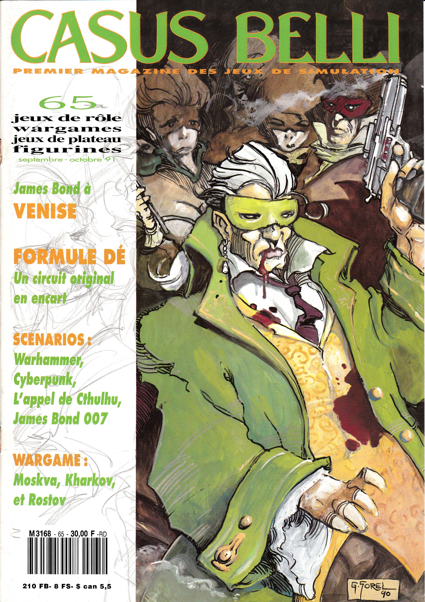
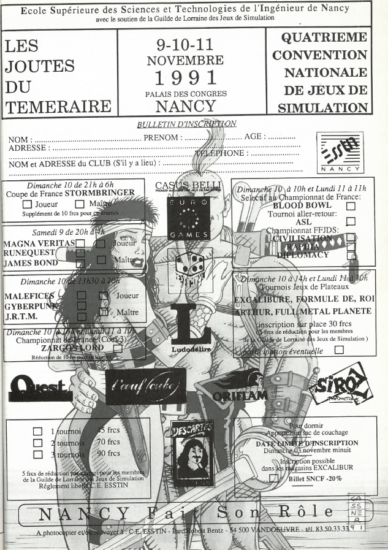
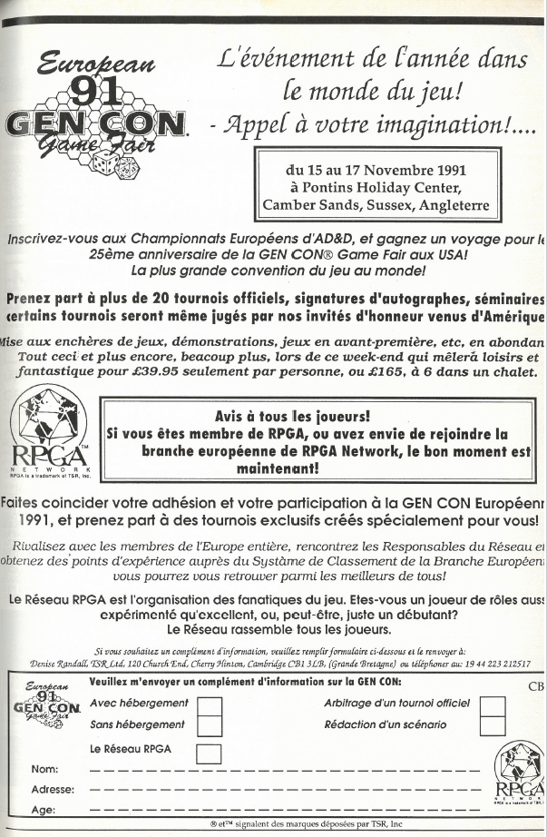
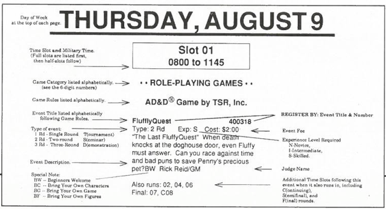
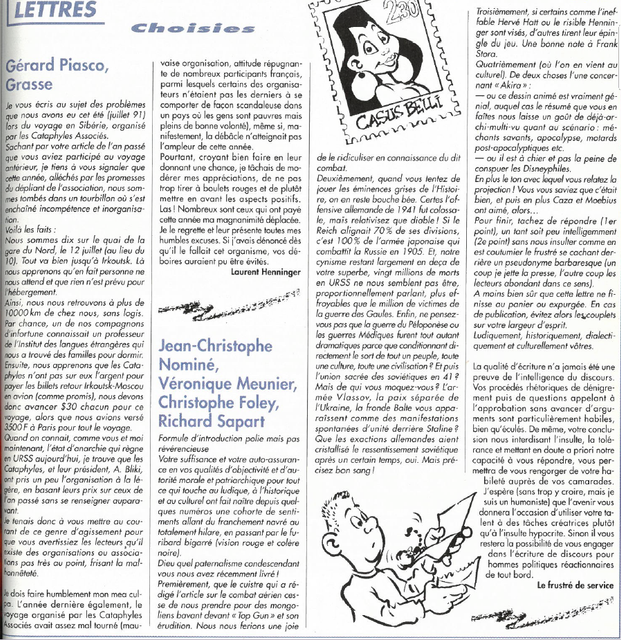
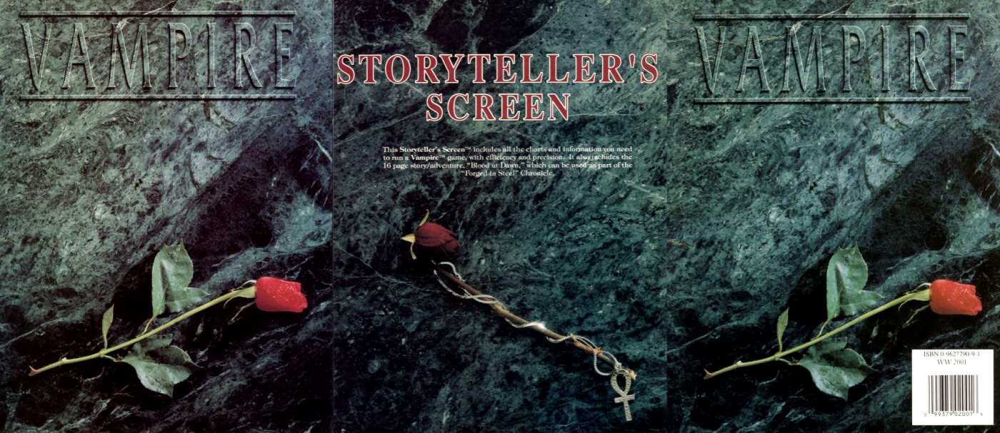
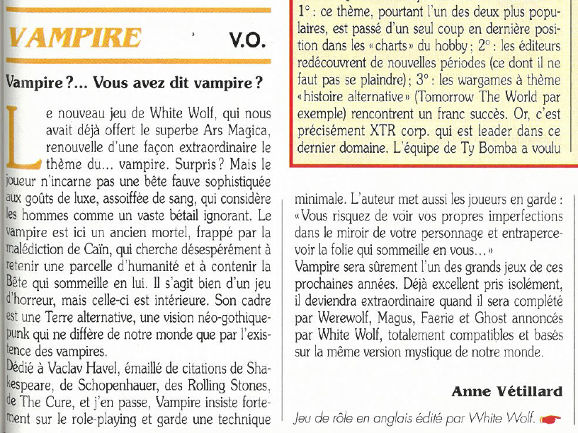
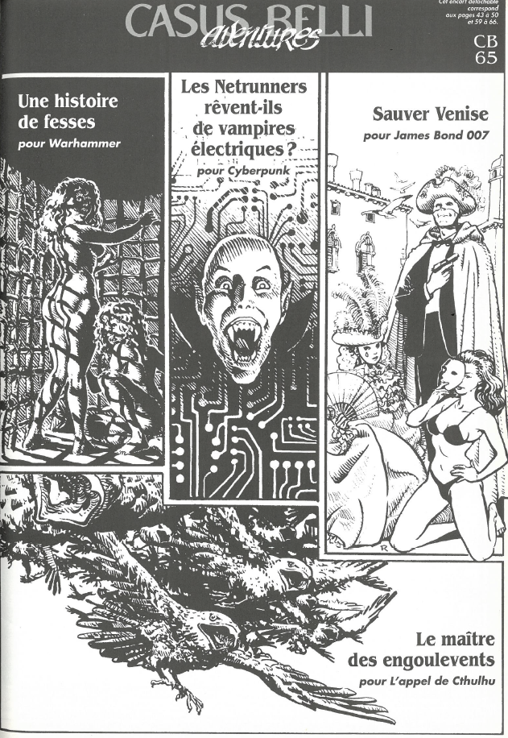

La deuxième partie de l’année 1991 est maintenant bien commencée et l’accalmie qu’on aurait attendue pendant l’été se décale plutôt sur le bimestre septembre – octobre avec peu d’événements majeurs à vous rapporter, notamment en France où le nouveau Gouvernement Cresson fait sa première rentrée.
Après le putsch raté de l’été, la dissolution de l’Union Soviétique reprend : c’est maintenant au tour des républiques d’Asie Centrale de se détacher du bloc soviétique, tandis que ce qui est encore l’URSS reconnaît officiellement l’indépendance de la Lituanie, de l’Estonie et de la Lettonie. Les pays baltes deviennent membres de l’Organisation des Nations Unies à la fin septembre. Toujours dans les symboles d’une Guerre Froide qui s’achève, le KGB disparaît et est officiellement remplacé par le SVR.
L’autre dissolution qui intervient avec cette rentrée est celle de la Yougoslavie mais avec les armes qui parlent : si la Slovénie parvient rapidement à se dégager de la guerre civile avec l’évacuation de l’armée fédérale, il n’en est pas de même pour la Croatie avec le début du siège de Dubrovnik. La Bosnie est alors encore préservée, mais ce répit ne va pas durer…
Sur les autres endroits du globe, ce sont heureusement d’autres guerres civiles qui prennent fin : au Salvador d’abord après un bilan de 80 000 morts en douze ans, et au Cambodge ensuite avec un fragile accord qui associe notamment les Khmers Rouges…
En Irak, la Guerre du Golfe est aussi terminée depuis quelques mois mais les tensions ressurgissent quand le désarmement imposé par l’ONU commence à s’attaquer au programme nucléaire du pays, ce qui finira par alimenter la légende des Armes de Destruction massives notoirement savamment dissimulées dans le pays.
Aux Etats-Unis, deux symboles marquants de cette nouvelle décennie : un obscur Bill Cinton de l’Arkansas annonce sa candidature pour la primaire Démocrate, tandis que Nirvana sort son album Nevermind, pavant la voie du grunge à venir. Coucou @Orlov pour ton expédition dans les Halles !!
Culturellement, la France n’est cependant pas en reste puisque c’est l’apparition du jeu de hasard Millionnaire avec sa fameuse émission TV impérissable !
Il est temps de passer à des choses plus sérieuses avec le Casus de ce bimestre. Celui-ci est disponible quasiment à la Rentrée Scolaire (qui a lieu pour cette année le 10 septembre et qui me voit partir dans un lycée complètement différent de mon groupe de jeu d’alors, ce qui va beaucoup plus espacer ma pratique  ). On devinera sans trop de difficulté, surtout pour @Damien Coltice , que la couverture pour ce numéro 65 est de Guillaume Sorel, qui démarre juste sa carrière dans la BD (L’Île des Morts est en préparation, mais n’est pas encore paru).
). On devinera sans trop de difficulté, surtout pour @Damien Coltice , que la couverture pour ce numéro 65 est de Guillaume Sorel, qui démarre juste sa carrière dans la BD (L’Île des Morts est en préparation, mais n’est pas encore paru).

Petit détour traditionnel par l’édito qui rappelle que comme sur Casus NO aujourd’hui, les rôlistes de 1991 aiment écrire et raconter leurs vies parce que le sondage publié dans le numéro précédent a déjà atteint plus de 2000 réponses !
On passe ensuite sur le programme des événements où j’évoquerai surtout pour @Tristan des noms d’associations et d’organisateurs de GN qui émergent et qui lui parleront plus particulièrement : outre Dédales et Michel Baume, on trouvera Alkhémia et Laurent Marenco, ou encore Les Visiteurs d’un Soir et Scarlett Bocci. Le milieu GN étant encore microscopique, j’aurai aussi le plaisir de jouer avec ces personnes, mais en 1991, je suis encore trop jeune et trop fauché pour me lancer. Comme l’Hiver approche, ce sont surtout les conventions de JDR qui vont prendre maintenant le relais, et on trouve dans ce Casus de belles pleines pages pour s’inscrire. D’abord pour les Joutes du Téméraire de l’ESSTIN à Nancy, qui regroupait plusieurs centaines de participants :

Et si vous aviez l’âme aventureuse, ce Casus 65 vous proposait d’aller tenter le Championnat Européen d’AD&D en franchissant la Manche toujours sans tunnel, grâce à l’organisation de la RPGA, sorte d’émanation affiliée à TSR pour encadrer les joueurs aussi fermement que les classes de personnage. La RPGA, plus qu’un rassemblement de fanboys de TSR, a en effet pour mission de proposer un système de règles et de tournoi, dont le fonctionnement semble aussi technique et complexe que le football américain, vu l’origine 100% US de cette association. Et c’est manifestement très pris au sérieux !

Casus nous débriefe aussi les conventions passées. D’abord le FSO de Toulon où on retrouvera en photo miniature le jeune Daniel Danjean @Chestel venu pour faire découvrir La Méthode du Docteur Chestel qui vient juste de sortir des Presses (du Midi puisqu’on est à Toulon). Mais c’est aussi le Championnat de France de Diplomacy à Paris, où Casus met en valeur les 3 diplomates féminines (sur 89 participants) qui sont venues affronter le patriarcat qui domine alors le milieu des jeux de simulation et de réflexion (cette remarque sarcastique est faite à escient pour une autre partie de ce Casus).
Pierre Rosenthal revient pour sa part de la GEN CON et nous propose, comme souvent avec Pierre, un article hors sujet : il est en effet plus question des à-côtés de la GEN CON que de l’actualité ludique de celle-ci. Pierre est ainsi manifestement passé complètement à côté du phénomène de la sortie de Vampire à l’occasion de cette GEN CON (contrairement à Anne Vétillard qui en parle un peu plus loin dans les critiques). Je me moque mais le long article de Pierre est en fait très intéressant pour replacer dans son contexte cet événement, qui en est déjà à sa 24ème édition.
D’abord celui de Milwaukee où elle a lieu et où, contrairement à ce que vous pouvez trouver désormais dans les offres de visite si vous allez en voyage touristique dans cette ville, la GEN CON et les rôlistes sont encore superbement ignorés. Pourtant, le fait qu’elle soit organisée dans le MECCA (le Centre des Congrès de la ville) n’est probablement pas étranger au fait qu’elle soit le pèlerinage annuel de tout ce que l’Amérique du Nord compte de joueurs et joueuses.
Ensuite sur son organisation elle-même et ses participants à la moyenne d’âge et à la diversité plus large que ce qui peuple encore les conventions en France : Pierre ne manque pas à cette occasion de faire un trait d’humour – réussi – en mentionnant ses jets ratés de séduction vers Lisa Smiley, sous l’œil contrarié de son boyfriend, John Killfrog. Pierre nous détaille ensuite les arcanes du fonctionnement de ce grand événement annuel, où tout semble millimétré comme des règles d’AD&D qui seraient appliquées à la lettre, ainsi que le démontre un extrait du catalogue des parties proposées que je reproduis ici, à l’austérité digne d’une feuille de personnage AD&Desque.

Pierre s’attarde également sur l’exotisme – qu’on ne connaît pas encore en France, faute d’un marché aussi étendu – avec tous les vendeurs de goodies ou les JDR indépendants qu’on peut déjà y trouver : par exemple So you wanna be a rock star pour simuler et jouer une star du rock de l’époque.
Business is business : comme on est au pays de l’Oncle $am, Pierre déplore que le salon est plus fonctionnel qu’esthétique, avec ses stands austères. Les éditeurs ne vous accorderont du temps pour discuter que si vous avez au préalable garni confortablement votre panier… Autant donc pour les rares informations glanées par Pierre, manifestement esseulé par les échanges limités obtenus, et le peu d’informations sur les sorties et tendances qu’il nous donne sur cette édition 1991.
Dans le reste des actualités rédactionnelles de ce numéro, on pourra mentionner qu’à défaut d’Internet, ce numéro nous rappelle avec le Courrier des Lecteurs que du papier et un crayon suffisent pour troller et allumer une flame war comme le prouve l’extrait en dessous.

Sur les zines, c’est l’increvable Tinkle Bavard d’@Alias et Cie, qui en est (seulement) à son numéro 10 et qui a les honneurs (mérités) de Tristan : si ce zine mythique va perdurer encore longtemps, notons qu’il est déjà exceptionnel pour ces publications amateures d’atteindre le numéro 10. Enfin, petit détour sur le minitel que j’évoque rarement, et le 3615 CASUS (qui à 1,29 FF la minute empêche pour sa part d’allumer les flame wars) : alors que le Web émerge à peine, Casus explique déjà comment télécharger des programmes en combinant micro-ordinateur personnel et son minitel, depuis les services développés sur le serveur de Casus.
On aborde maintenant les sorties et les critiques et elles sont copieuses pour ce numéro, les cadeaux de Noël approchant… Comme d’habitude pour la France, c’est toujours notre tiercé Jeux Descartes / Oriflam / Siroz qui portent le marché. Chez Descartes, du classique et encore du classique : le Supplément aux Règles pour Star Wars (avec une critique un peu trop dithyrambique dans les Têtes d’Affiche pour ce livre qui a mal vieilli), Les Demeures de l’Epouvante pas vraiment meilleur pour l’Appel de Cthulhu et L’Empire en flammes aussi décevant pour Warhammer. La sortie la plus remarquable est donc la 2ème édition de Blood Bowl avec son terrain en Astrogranit © , qui promettait de faire un beau paquet emballé à mettre sous le sapin.
Oriflam se distingue surtout pour ses annonces : la nouvelle édition de Stormbringer, Chrome pour Cyberpunk et la sortie pour l’année prochaine de Pendragon ! Autre sortie majeure mais du côté de Siroz et pour la fin de cette année 1991, c’est de Bloodlust dont il s’agit ! La sortie nationale est annoncée pour le 15 novembre, avec un jeu qui sera épuisé en une semaine. Heavy Metal pour sa part, sorti moins d’un an plus tôt, n’a pas la même chance mais continue sa courte carrière, avec Urban Guerilla.
A côté de ces 3 piliers, ça vivote : Hexagonal sort Aux Portes du Mordor pour JRTM et devient également éditeur de magazine avec la VF de Dragon. A propos de Dragon et avec la disparition de Dragon Radieux, les jeux phares de l’ancien éditeur renaissent : Hurlements avec les Hurlelune 4 et 5, et Anashiva Reah pour Empires et Dynastie chez Les Presses du Midi, qui publie aussi à ce moment La Méthode du Docteur Chestel (et la critique dithyrambique et méritée de Tristan que vous trouverez ici : https://www.legrog.org/jeux/methode-du-docteur-chestel/methode-du-docteur-chestel-fr, en attendant l’Epreuve du Feu dans le prochain numéro) ! Flamberge tente pour sa part un dernier soubresaut avec l’annonce de la traduction d’Ars Magica, qui ne paraîtra donc jamais.
Dans les autres critiques des produits en VF, on se consolera avec celle de Capitaine Vaudou maintenant disponible dans la gamme Simulacres, L’Empire du Nil pour TORG qui est l’autre cosm chouchou de Tristan avec celui de la Cyberpapauté, et l’excellentissime Les Mystères d’Arkham et son Arkham Advertiser ici traduit (et Tristan espère et sera comblé que les autres tomes du Pays de Lovecraft à venir seront avec le même niveau de qualité).
Actualité plus chargée pour les Etats-Unis pour cause de Gen Con : Avalon Hill ne se contente plus de « commercialiser » Runequest mais investit le JDR avec sa propre production, Tales From the Floating Vagabond. Nouveau venu également, Leading Edge avec le premier jeu de rôle officiel Aliens, qui ne fera pas date…
Du côté de Chaosium et de Cthulhu, c’est l’entrée en gare de la grosse campagne Horror on the Orient Express. Et à propos de campagne fleuve et de VF de Pendragon en approche, l’éditeur californien sort aussi à ce moment The Boy King, que Jean Balczesak qualifie d’exceptionnelle dans sa Tête d’Affiche.
Cyberpunk chez Talsorian continue à se développer : l’Eurosource qui préfigure une URSS encore existante en 2020 alors que celle-ci vit ses derniers mois (le Futur Proche est un genre cruel), la mythique Night City et l’annonce du supplément When Gravity Fails sur la base de l’œuvre d’Effinger. Même avalanche de sorties chez Steve Jackson Games, on sent l’effet GEN CON : Camelot pour faire du Pendragon avec du GURPS, Old West qui donnera la version GURPS Western en VF quand il sortira, ou le très intéressant Time Travel, sur le voyage dans le temps mais aussi comme trait d’union pour faire des cross over entre suppléments GURPS.
West End Games recentre ses gammes pour sa part : plus de Ghostbusters ou de Paranoia, ni de wargames ou de jeux de plateau ; l’éditeur se concentre désormais sur Star Wars avec le très bon Cracken’s Field Guide qui introduit le fameux général, ou TORG avec Orrorsh.
FASA s’est lui-même recentré sur ses deux gammes phare : Battletech avec la seconde édition de Mechwarrior, le JDR dans cet univers ; et Shadowrun avec le premier supplément régional, le London Sourcebook, sur lequel CROC s’enthousiasme dans sa critique, en disant que ce premier volume met la barre très haute pour celui sur l’Allemagne à venir. Marrant, car il me semblait que ce supplément UK était justement resté mineur pour les fans de Shadowun, notamment quand il devra justement soutenir la comparaison avec le supplément teuton (et par humilité, on ne dira rien du supplément de chez nous…).
Même direction aussi avec ICE qui se concentre sur Rolemaster et MERP / JRTM avec pour ce dernier, avec la sortie de Minas Ithil. Plus de SpaceMaster en revanche mais Cyberspace, la déclinaison Cyberpunk de Rolemaster, est encore vivant avec pour sa part Chicago Arcology, un supplément sur la 3ème ville américaine, dont Casus nous dit qu’il est suffisamment générique pour être réutilisé dans d’autres jeux. Un supplément donc punk, pas forcément gothique, mais prémonitoire par rapport à ce que Chicago va symboliser pour un autre jeu bientôt célèbre ?
Ce qui est vrai pour FASA et ICE l’est aussi pour GDW quant à ses gammes resserrées : d’abord pour Twilight 2000 et son NATO Combat Vehicle Handbook, ou sa tentative – après avoir braconné sur le cyberpunk en tentant de ramener Traveller dans un univers de futur proche avec 2300 AD – de faire de même avec Twilight en dérivant son univers contemporain pour le décliner vers du fantastique. C’est ce que propose Dark Conspiracy et CROC n’a pas de mots assez durs dans sa critique pour ce jeu qui, à l’instar de TORG, surfe sur trop de thèmes en même temps : Horreur Contemporain, Complots et Secrets (avec des ET dedans), et ambiance Post Apocalyptique. Qui trop étreint mal embrasse pour faire un clin d’œil avec ce qui va suivre juste après, puisqu’on voit apparaître avec cette fin 1991 les jeux sur les thèmes du contemporain fantastique qui commencent à prendre leur essor.
Mais avant de lever ces ténèbres, attardons-nous sur la megacorporation TSR qui continue sa production tous azimuts. Déjà pour ses gammes hors (A)D&D : Luna pour Buck Rogers et Warlord of Baluur pour Marvel Super Heroes. Et ensuite pour la grosse machine (A)D&D avec ses suppléments d’univers : Sons of Azca pour D&D et le Hollow World, le retour des mega donjons avec The Ruins of Undermountain et sinon le plus atypique Port of Ravens Bluff, issu de la production de la RPGA, avec un bateau à construire en encart papier (!) ; sinon Oak Lords pour Dragonlance et son pendant (?) Dark Lords pour Ravenloft, et enfin le Practical Planetology pour Spelljammer,. Et s’il vous manquait des règles, TSR continue ses sourcebooks génériques avec le Tome of Magic, et Arms et Equipment pour ce bimestre.
Et s’il vous manquait encore des règles, on est aussi dans la période où l’éditeur Mayfair sort à un rythme soutenu ses suppléments Role Aids non officiels pour un AD&D qui n’est pas passé en licence ouverte (et ce qui vaudra un procès à Mayfair). Dans tous les cas, on y trouvera de très belles références comme Psionics qu’Anne Vetillard conseille comme alternative à la révision drastique des règles sur les psioniques de la 2nde édition d’AD&D, ou Lizardmen. Et histoire de pousser jusqu’au bout la logique de cannibalisation de Mayfair, comme celui-ci porte encore la licence DC Comics, on pourra même réutiliser son Atlas of the DC Universe qui vient de paraître pour faire un croisement ou un hack avec le Marvel Super Heroes de TSR.
Il est donc temps de finir cette revue avec cet éditeur obscur qu’est encore White Wolf, et qui sort donc la 1ère édition de Vampire: The Masquerade et ses premiers suppléments. Le scénario Blood Nativity chez Atlas Games et la campagne Ashes to Ashes, ainsi que son écran hideux comme le relève Casus à cause de son panneau central et de son code barre malvenu (la VF d’Hexagonal corrigera heureusement le tir) :

Casus pourtant pressent la révolution que ce jeu va apporter avec l’excellente critique d’Anne Vétillard qui s’extasie déjà dessus, et devine que cela sera un jeu qui marquera la décennie. Je vous reproduis ici sa Tête d’Affiche prémonitoire, qui me rappelle pourquoi Casus est aussi un magazine qui m’a tellement marqué. Ses rédacteurs en fait n’étaient pas seulement talentueux pour en faire un magazine riche et divertissant, mais ils avaient une vraie expertise ludique à deviner les tendances du futur (CROC aura la même anticipation quand Magic sortira par exemple).

Pour en savoir plus sur cette première édition, et ces premiers suppléments, je ne peux que vous inviter à consulter aussi les passionnantes vidéos de @Coulis , en commençant donc avec celle-ci :
L’Epreuve du Feu est consacrée à Mercenaires, cette production française qui permet de jouer à un jeu de rôle contemporain de manière très réaliste. Cette approche m’a toujours laissé dubitatif à l’époque : quelle était la valeur ajoutée par rapport à reprendre un système de règles générique désormais facilement accessible (Simulacres ou GURPS), et d’ajouter en aide de jeu ce qu’on pouvait trouver dans les magazines et les encyclopédies contemporaines de l’époque ? J’aurai donc longtemps hésité avant de l’acheter ou non, surtout à cause de l’excellent scénario qu’on trouvera avec le prochain numéro de Casus… Bref, j’y reviendrai et je laisse surtout ici la parole à Pierre Lejoyeux qui en fait une revue copieuse, et valorise ce jeu issu d’une toute petite maison d’édition, même si Pierre ne manque pas d’en relever les défauts de conception, et le thème relativement étriqué.
Les scénarios proposés pour ce numéro sont les suivants :
- Un Cyberpunk, Les netrunners rêvent-ils de vampires électriques ?, de Patrick Leclercq (le futur Pat) et Pierre Lejoyeux, à l’intrigue ambitieuse et au développement bien trop court de mon point de vue (je pense que chaque partie aurait méritée d’être un scénario sur une à deux sessions à part entière). Fun fact, même si elle n’intervient pas particulièrement dans ce scénario, Pierre refait figurer sa PNJ iconique de Cyberpunk Gladys « Piece of cake » Gallagher, et côtoie donc avec cet encart scénarios la future emblématique Nitouche qu’on retrouve un peu plus loin
- Un Appel de Cthulhu, Le Maître des Engoûlevents, par le désormais fameux collectif Tristan Lhomme qui s’est installé durablement chez Casus. J’avais personnellement un peu oublié cette production, idéale pour l’initiation, par rapport à des équivalents plus récents comme Les Manteaux Noirs ou La Commanderie de New Sorans, et qu’on cite plus régulièrement pour de l’initiation. Pourtant, on a ici un très beau matériel dont le seul défaut est peut-être qu’il n’a rien de Cthulhien (mais c’est aussi son avantage si on veut surprendre ou le basculer sur un autre type de JDR de contemporain fantastique comme Maléfices, Chill ou même le brancher avec un Simulacres ou GURPS Horreur, ou tout système générique bien plus récent)
- Un James Bond, Sauver Venise, de Thierry Meichel, qui aurait pu être une pièce d’anthologie avec son cadre très Bondien (Venise, donc…) augmenté en plus d’une aide de jeu sur la cité lacustre, à la manière de celles décrites dans les modules officiels de la gamme en VF puisque le plan est réalisé par Michel Serrat. Malheureusement, l’aide de jeu de Solange Delepaut se limite à des informations touristiques un peu superficielles. Le scénario est raté pour sa part puisque l’intrigue est vraiment pas épaisse (encore un Plan d’un Méchant Machiavélique et Diabolique ™ ) et se limite à un événementiel bébête à dérouler, sans qu’il n’y ait aucun développement. C’est certes dû aux contraintes de pagination des scénarios Casus, mais on pourra aussi pointer du doigt l’auteur qui réserve une pleine page à ses PNJ en indiquant uniquement leurs statistiques, sans qu’il y ait la moindre mention de leurs personnalités et objectifs. Bref, tout sera à faire avec ce scénario si vous voulez réellement utiliser le cadre prometteur de Venise…
- Je termine avec le scénario Warhammer de Pierre Lejoyeux, Une histoire de fesses, qui introduit aussi en PNJ la fameuse Nitouche avec les dessins de Roland Barthélémy, et qu’on retrouvera dans la 2ème édition de Rêve de Dragon chez Multisim. Ce n’est donc pas complètement un hasard que Pierre propose aussi ce scénario pour AD&D et Rêve de Dragon, et effectivement il s’adapte bien pour ces deux jeux. Or donc, de quoi est-il question ? Eh bien, à l’aune de notre patriarcat dominant de l’époque et de l’illustration suggestive sur la couverture de l’encart, j’ai relu et partagé ce scénario avec des yeux de 2026.

Verdict : le scénario reste très recommandable, plus malin que lubrique même si les rôles féminins jouent sur les caricatures… Pris comme un vaudeville (Ciel, mon PJ !), ça passe mais si vous voulez le jouer plus retors, cela demandera de reprendre et de remettre un peu de nuance. En tout cas, une curiosité à relire, avec une promesse de fun comme la Nuit Agitée aux Trois Plumes !
- En plus de ces désormais traditionnels 4 scénarios dans l’encart, on trouvera un scénario bonus dans la rubrique Le Petit Capharnaüm, celle consacrée aux aides de jeu pour SimulacreS, pour Cyber Age par Pierre Rosenthal. Comme c’est limité à une page, c’est un peu sommaire et cela rappelle que Pierre, de son propre aveu, n’a jamais été très bon scénariste… On peut donc oublier.
Denis Gerfaud nous propose deux aides de jeu pour ce numéro : la suite des missives de Fwouinn le Parcheminé, sans grand intérêt ici, et Profession : Gardien du Temps, qui avec un thème pourtant très porteur, se contente d’enfoncer des portes ouvertes dans un format très verbeux. Gros bof donc pour ce numéro !
Passons sur les Jeux de Plateau où je vais d’abord profiter pour mettre deux jeux en lumière abordés dans les Têtes d’Affiche. Casus nous a en effet parlé de Space Fleet, jeu de combat spatial dans l’univers de Warhammer 40K. Sorte de complément du best seller Space Crusade (dont on reparlera prochainement), je m’étonne que le jeu n’ait pas connu une carrière similaire alors que Casus a un avis très positif dessus. Manque de suivi et de soutien de l’éditeur de Nottingham ?
Laurent Henninger pour sa part vous vante Red Sky Morning, que je mets en visibilité de @Sylvestre et de son article concernant Fortress America (https://jeuxetstrategie.fr/newsletter-5/) : maintenant que nous sommes en 1991, les Etats-Unis doivent se trouver un nouvel ennemi mortel ! Le Red n’est ici plus celui de l’URSS, mais celui du Soleil Levant du Japon de l’époque encore triomphant et à la pointe de la technologie et de l’électronique (la Silicon Valley n’est encore qu’une Vallée et pas un Empire…), et qui fait office de nouvelle menace existentielle. Red Sky Morning vous propose donc de jouer une Guerre du Pacifique moderne et inversée ! Laurent salue sa prospective visionnaire, alors que le Japon est entré dans sa décennie perdue, même si elle n’est pas encore vraiment perceptible. Le Futur Proche est décidément un genre cruel…
On continue où, après les excellentissimes Republic of Rome (qui vous a plus marqué que Zargos) et Formule Dé des numéros précédents, c’est au tour de la nouvelle édition de Junta et de Vertigo d’être chroniqués. Même si on parle de Monster Games avec des jeux qui prennent des plombes à jouer (surtout Junta), on commence à avoir une richesse et une diversité d’offres de jeux de plateau qui sort cette pratique de la marginalité. Concernant Vertigo, je n’ai jamais expérimenté mais Casus propose en plus de la critique une aide de jeu sur les différentes approches stratégiques possibles.
Dans les autres éléments rapatriés des Têtes d’Affiches et ordinairement en fin du magazine, on notera que la rubrique Ludotique est maintenant réduite à une portion congrue, avec une revue rapide du jeu informatique Gold of the Americas.
On passe ensuite sur la partie Wargame avec le 3ème volet du dossier sur la Guerre Germano-Soviétique. Plus d’édito brûlant sur le sujet de Laurent Henninger, qui est remplacé par un édito du même Laurent un peu pontifiant, qui salue la fin de la « crise d’acné » du wargame et son entrée dans la maturité (et où on découvre que la période de prédilection de Laurent ne sont pas les conflits modernes mais la Renaissance, qui est toujours restée un parent pauvre de ces jeux et ce malgré la diversité croissante du loisir saluée par Laurent ?).
Pour rester dans la thématique du dossier, encore et toujours des wargames sur le Front Est : Turning Point Stalingrad d’Avalon Hill sur une des batailles tarte à la crème des wargamers, ou le trop complexe Edelweiss de Clash of Arms pour simuler cette campagne très méconnue, et autre échec stratégique dans le Caucase.
Casus consacre enfin un plus long dossier sur une série de wargames français à paraître chez Eurogames avec la série Etoiles Rouges et Croix Noires, avec un objectif d’initiation que Casus compare d’emblée à SimulacreS.
On sort enfin du Front Est avec un tout autre intéressant article de Marc Brandsma sur une des batailles napoléoniennes elle-même restée méconnue, Auerstaedt. L’exercice est ici de comparer les approches de deux wargames consacrés à cette bataille : La Bataille D’Auerstaedt chez Clash of Arms et Auerstaedt 1806 chez Socomer. Revue passionnante, limite trop courte et avec le gros défaut qu’aucune information n’est donnée sur les références respectives des jeux. On ne sait donc pas qui a édité lequel, ni le détail de leur contenu, ou s’ils sont en VF ou VO puisque les deux titres sont eux-mêmes déceptifs 😄 Heureusement qu’on a Internet maintenant qui m’a permis de retrouver mes petits !
Je pourrai dire ici que la partie Wargames de Casus s’arrête, mais en fait pas vraiment puisqu’on retrouve la rubrique des Inspis ensuite, à nouveau avec un ajout avec Inspis Wargames, avec pas moins de 4 pages. C’est en effet non seulement les (nombreuses) lectures de Laurent Henninger qui sont détaillées, mais aussi celles des autres contributeurs : Claude Esmein, Marc Brandsma, Frédéric Bey. La liste des lectures proposées est assez fascinante : Laurent invite à dévorer les publications des Services Historiques des Armées, Frédéric Bey replonge pour sa part dans les ouvrages antiques (La guerre contre les Vandales de Procope de Césarée ou L’Histoire romaine de Dion Cassius – non, il ne s’agit pas d’un cousin étranger de Joe Casus) ; quant à Marc Brandsma, il conseille lui aussi des ouvrages anciens avec Les transformations de la guerre, livre de prospective paru en 1911 pour le mettre en comparaison avec ce qui s’est réellement déroulé ensuite avec la Première Guerre Mondiale. Un peu comme ce que nous faisons ici en remettant en perspective nos incertitudes et craintes de 1991, et ce qui s’est effectivement passé sur les 35 ans qui ont suivi. Au final, tout un tas de références pointues « que tout le monde devrait avoir dans sa bibliothèque » comme dirait Tristan Laurent.
On finit d’abord avec Roland Wagner et les inspis SF, qui met à l’honneur l’écrivaine britannique Tanith Lee et deux romans parus antérieurement et qui viennent d’être réédités : Ne mords pas le soleil et Le vin saphir. Il sera sinon question pour ce numéro de Moorcock, avec là aussi une réédition non pas des cycles d’Elric ou de Hawkmoon, mais de celui de Jerry Cornelius : qui en avait déjà entendu parler ? On passe ensuite sur les BD : toujours un peu difficile de faire le tri sur une production déjà abondante à l’époque. Pour ce bimestre, je retiendrai Tambow, qui n’est pas un roman graphique (le genre n’existe pas encore) mais dans la veine des BD témoignages. Le cycle de Taï Dor propose non seulement du contexte médiéval et des dimensions parallèles, pas étonnant qu’André Foussat le recommande aux lecteurs de Casus. Enfin, André met aussi en lumière du cyberpunk à la française avec du Minitel en 2069 avec le cycle de Convoi - Les Aventures De Karen Springwell.
On termine avec les Inspis Universalis de Tristan, d’abord avec les deux tomes L’Escholier de Dieu et Le Serviteur du Prophète de Mika Waltari, et aussi Sinouhé l’Egyptien du même auteur, mais pas du tout sur la même période de l’Histoire. Tristan profite aussi de la rubrique de ce numéro pour occuper un large espace sur les musiques d’ambiance recommandées. Alors forcément comme c’est l’époque, c’est sur CD et sur des films plus ou moins contemporains d’alors : Cyrano (coucou Jean-Paul qui nous a quitté récemment), Le Nom de la Rose, Octobre Rouge, Mission pour n’en citer que quelques-uns. Je vous laisse sur ces souvenirs pour clôturer cette revue, en attendant la suivante !